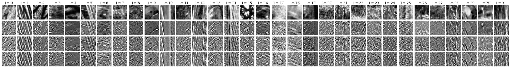
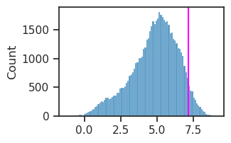

(09) vH — save 32x32#
Motivation: \(32 \times 32\), low contrast removed (bottom 5%).
Show code cell source
# HIDE CODE
import os, sys
from IPython.display import display
# tmp & extras dir
git_dir = os.path.join(os.environ['HOME'], 'Dropbox/git')
extras_dir = os.path.join(git_dir, 'jb-vae/_extras')
fig_base_dir = os.path.join(git_dir, 'jb-vae/figs')
tmp_dir = os.path.join(git_dir, 'jb-vae/tmp')
# GitHub
sys.path.insert(0, os.path.join(git_dir, '_IterativeVAE'))
from figures.fighelper import *
# warnings, tqdm, & style
warnings.filterwarnings('ignore', category=DeprecationWarning)
warnings.filterwarnings('ignore', category=FutureWarning)
warnings.filterwarnings('ignore', category=UserWarning)
from rich.jupyter import print
%matplotlib inline
set_style()
from figures.imgs import plot_weights
from utils.imgproc import (
do_process, xtract_patches,
do_fft, compute_fftfreq,
EyeDataset,
)
DOVES \((36 \rightarrow 32)\)#
npix = 36
crop_size = 2
doves = EyeDataset()
patches = xtract_patches(doves.imgs, npix)
x_wt, x_wt_cn, x_wt_cn_zs = do_process(patches, crop_size=crop_size)
x = patches[..., crop_size:-crop_size, crop_size:-crop_size]
doves.imgs.shape, patches.shape, x_wt_cn_zs.shape
(torch.Size([101, 1, 768, 1024]),
torch.Size([101, 588, 1, 36, 36]),
torch.Size([101, 588, 1, 32, 32]))
Identify low contrast patches#
Bottom 5%
q = 0.05
vars = np.var(tonp(x), axis=(-1, -2))
vars = np.log(vars.ravel())
thres = np.quantile(vars, q)
accept = vars > thres
msg = f"# removed: {(~accept).sum()} ——— # final: {accept.sum()}"
print(msg)
# removed: 2970 ——— # final: 56418
Remove low contrast patches#
x, x_wt, x_wt_cn, x_wt_cn_zs = map(
lambda a: flatten_np(a, end_dim=1)[accept],
[x, x_wt, x_wt_cn, x_wt_cn_zs],
)
x_wt_cn_zs.shape
torch.Size([56418, 1, 32, 32])
ncols = 32
rng = get_rng(0)
ids = rng.choice(range(len(x)), size=ncols, replace=False)
fig, axes = create_figure(4, ncols, (1.0 * ncols, 4.25), 'all', 'all')
for i in range(ncols):
axes[0, i].imshow(tonp(x[ids[i], 0].squeeze()), cmap='Greys_r')
axes[1, i].imshow(tonp(x_wt[ids[i], 0].squeeze()), cmap='Greys_r')
axes[2, i].imshow(tonp(x_wt_cn[ids[i], 0].squeeze()), cmap='Greys_r')
axes[3, i].imshow(tonp(x_wt_cn_zs[ids[i], 0].squeeze()), cmap='Greys_r')
axes[0, i].set_title(f"i = {i}", fontsize=15)
remove_ticks(axes)
plt.show()

bad_i = 4
sns.histplot(vars)
plt.axvline(vars[ids[bad_i]], color='magenta');

Save data#
Shuffle#
shuffle_inds = np.arange(len(x))
rng = get_rng()
rng.shuffle(shuffle_inds)
Create save dir#
save_dir = pjoin(doves.path, 'vH32')
os.makedirs(save_dir, exist_ok=True)
os.listdir(save_dir)
['patches.npy',
'processed.npy',
'patches_quantized.npy',
'wt_cn.npy',
'wt.npy']
Save#
save = {
'patches': tonp(x)[shuffle_inds],
'wt': tonp(x_wt)[shuffle_inds],
'wt_cn': tonp(x_wt_cn)[shuffle_inds],
'processed': tonp(x_wt_cn_zs)[shuffle_inds],
}
for name, obj in save.items():
save_obj(
obj=obj,
file_name=name,
save_dir=save_dir,
verbose=True,
mode='npy',
)
[PROGRESS] 'patches.npy' saved at /home/hadi/Datasets/DOVES/vH32
[PROGRESS] 'wt.npy' saved at /home/hadi/Datasets/DOVES/vH32
[PROGRESS] 'wt_cn.npy' saved at /home/hadi/Datasets/DOVES/vH32
[PROGRESS] 'processed.npy' saved at /home/hadi/Datasets/DOVES/vH32